{% include JB/setup %}
{% raw %}
<div>
<div class="book" xml:lang="en"><div class="book"><div class="book"><div class="book"><h1 class="title"><a id="gnu3-CHP-3-SECT-3" class="calibre1"></a>Checking Spelling Using Ispell</h1></div></div></div><p class="copyright">Emacs includes two spell-checking interfaces: to the Unix spell
checker, <code class="calibre21">spell</code>, and to Ispell, which many people,
including us, prefer. We say
"interfaces" because Emacs does not
include the executables for either of these spell-checkers. Because
Ispell is superior and runs on a variety of platforms,
we'll cover only Ispell here. If you attempt to run
Ispell and it is not available, you'll have to
install it. <a class="calibre2" href="ch13.html" title="Chapter 13. Platform-Specific Considerations">Chapter 13</a> provides details on
installing Ispell on Windows and on Mac OS X.</p><p class="copyright">A further enhancement to Ispell is Flyspell, a command that
highlights misspelled words on the fly. If you have Ispell installed,
you'll have Flyspell support as well.</p><div class="book" xml:lang="en"><div class="book"><div class="book"><div class="book"><h2 class="title1"><a id="gnu3-CHP-3-SECT-3.1" class="calibre1"></a>Checking a Buffer</h2></div></div></div><p class="copyright">Ispell includes options to
<a id="gnu3-CHP-3-ITERM-1930" class="calibre2"></a>
               <a id="gnu3-CHP-3-ITERM-1931" class="calibre2"></a>
               <a id="gnu3-CHP-3-ITERM-1932" class="calibre2"></a>check a buffer, a region, the comments in
a program, or a single word. After you type the command telling
Ispell what area you want to check, it works the same way for all
these options. We'll describe <span><strong class="calibre5">ispell-buffer</strong></span> here. If all the words are
spelled correctly, Ispell displays the message,
<code class="calibre21">Spell-checking done</code>. If Ispell finds a misspelled word, a screen
like the following appears. Let's spell-check a
hastily typed passage from Homer's
<span><em class="calibre7">Odyssey</em></span>.</p><div class="book"><a id="ch03-15-fm2xml" class="calibre2"></a><table class="calibre8"><colgroup class="calibre9"><col class="calibre10"/></colgroup><tbody class="calibre15"><tr class="calibre12"><td class="calibre17">
                           <p class="copyright">Type: <span><strong class="calibre5">Esc x ispell-buffer Enter</strong></span>
                           </p>
                        </td></tr><tr class="calibre12"><td class="calibre17">
                           <p class="copyright">
                              </p><div class="book"><div class="mediaobject"><a id="I_3_tt93" class="calibre2"></a>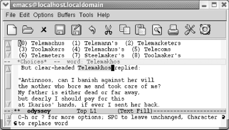</div></div><p class="copyright">
                           </p>
                        </td></tr><tr class="calibre12"><td class="calibre19">
                           <p class="copyright">Ispell finds the first unrecognized word in the buffer.</p>
                        </td></tr></tbody></table></div><p class="copyright">Ispell moves to the first unrecognized word, in this case a proper
name correctly spelled (except for the proper accent marks). At the
top of the screen, Ispell opens a small window that displays
alternative spellings, numbered starting with 0. The minibuffer says
<code class="calibre21">C-h or ? for more options, SPC to leave unchanged, character
to replace word</code>. In this case, we have a properly spelled
name, so press <span><strong class="calibre5">i</strong></span> to ask Ispell to
insert it into your private <a id="gnu3-CHP-3-ITERM-1933" class="calibre2"></a>
               <a id="gnu3-CHP-3-ITERM-1934" class="calibre2"></a>dictionary, which is kept in a
file called <span><em class="calibre7">.ispell_&lt;language&gt;</em></span> in your
home directory,<sup class="calibre6">[<a id="gnu3-CHP-3-FNOTE-1" href="#ftn.gnu3-CHP-3-FNOTE-1" class="calibre2">1</a>]</sup> where <span><em class="calibre7">language</em></span> is the
<span><em class="calibre7">language</em></span> you are using (English by default). If
this file doesn't exist, Ispell creates it without
complaint and later asks you if you want to save it. To insert the
word in the dictionary in lowercase, press <span><strong class="calibre5">u</strong></span> and Ispell lowercases the word and then puts
it into your dictionary. Of course, because this is a proper name, we
insert it as it appears in the passage.</p><div class="book"><a id="ch03-16-fm2xml" class="calibre2"></a><table class="calibre8"><colgroup class="calibre9"><col class="calibre10"/></colgroup><tbody class="calibre15"><tr class="calibre12"><td class="calibre17">
                           <p class="copyright">Press <span><strong class="calibre5">i</strong></span>:</p>
                        </td></tr><tr class="calibre12"><td class="calibre17">
                           <p class="copyright">
                              </p><div class="book"><div class="mediaobject"><a id="I_3_tt94" class="calibre2"></a>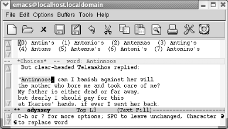</div></div><p class="copyright">
                           </p>
                        </td></tr><tr class="calibre12"><td class="calibre19">
                           <p class="copyright">Ispell moves to the next unrecognized word, another proper name.</p>
                        </td></tr></tbody></table></div><div class="book"><a id="ch03-17-fm2xml" class="calibre2"></a><table class="calibre8"><colgroup class="calibre9"><col class="calibre10"/></colgroup><tbody class="calibre15"><tr class="calibre12"><td class="calibre17">
                           <p class="copyright">We insert a few more proper names and move along to the first real
misspelling, <span><em class="calibre7">pwers</em></span>.</p>
                        </td></tr><tr class="calibre12"><td class="calibre17">
                           <p class="copyright">
                              </p><div class="book"><div class="mediaobject"><a id="I_3_tt95" class="calibre2"></a>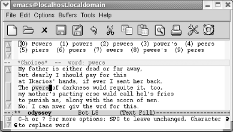</div></div><p class="copyright">
                           </p>
                        </td></tr><tr class="calibre12"><td class="calibre19">
                           <p class="copyright">Ispell finds <span><em class="calibre7">pwers</em></span> misspelled.</p>
                        </td></tr></tbody></table></div><p class="copyright">Ispell opens a window at the top of the screen listing choices for a
replacement. Usually one of its top few choices is correct.</p><div class="book"><a id="ch03-18-fm2xml" class="calibre2"></a><table class="calibre8"><colgroup class="calibre9"><col class="calibre10"/></colgroup><tbody class="calibre15"><tr class="calibre12"><td class="calibre17">
                           <p class="copyright">To select <span><em class="calibre7">powers</em></span>, press: <span><strong class="calibre5">1</strong></span>
                           </p>
                        </td></tr><tr class="calibre12"><td class="calibre17">
                           <p class="copyright">
                              </p><div class="book"><div class="mediaobject"><a id="I_3_tt96" class="calibre2"></a>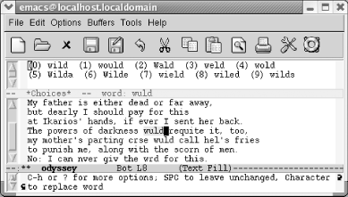</div></div><p class="copyright">
                           </p>
                        </td></tr><tr class="calibre12"><td class="calibre19">
                           <p class="copyright">Ispell replaces the word and goes on to the next misspelling.</p>
                        </td></tr></tbody></table></div><p class="copyright">If one of the words that Ispell lists at the top of the screen is
correct, you type the number, and Ispell makes the replacement. To
replace a word yourself, press <span><strong class="calibre5">r</strong></span>.
After you type the corrected word, Ispell replaces it. If you press
<span><strong class="calibre5">R</strong></span> instead, Ispell starts a
query-replace through which you can correct all cases of the
misspelling in this buffer.</p><p class="copyright">Instead of replacing the
<a id="gnu3-CHP-3-ITERM-1935" class="calibre2"></a>word, you may simply want Ispell to skip
over it. To skip this occurrence of a misspelled word, press
<span><strong class="calibre5">Space</strong></span>. To ignore a misspelled word
for the rest of the session for all buffers, press <span><strong class="calibre5">a</strong></span> (for accept). Uppercase <span><strong class="calibre5">A</strong></span> has one subtle difference: it tells Ispell
to accept the word for this session but only in this buffer.</p><p class="copyright">If you can see that something more complicated is wrong, you can
start a recursive edit by typing <span><strong class="calibre5">C-r</strong></span>. Fix the error and type <span><strong class="calibre5">C-M-c</strong></span> to exit the recursive edit and resume
Ispell. (You may recall that we discussed recursive editing earlier
in this chapter.)</p><p class="copyright">Our passage repeatedly spells <span><em class="calibre7">would</em></span> incorrectly
and typing the character beside the correct word only replaces a
single incidence, so a better choice would be to type <span><strong class="calibre5">R</strong></span> to query-replace the word throughout the
buffer.</p><div class="book"><a id="ch03-19-fm2xml" class="calibre2"></a><table class="calibre8"><colgroup class="calibre9"><col class="calibre10"/></colgroup><tbody class="calibre15"><tr class="calibre12"><td class="calibre17">
                           <p class="copyright">Type: <span><strong class="calibre5">R</strong></span>
                           </p>
                        </td></tr><tr class="calibre12"><td class="calibre17">
                           <p class="copyright">
                              </p><div class="book"><div class="mediaobject"><a id="I_3_tt97" class="calibre2"></a>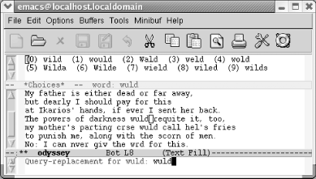</div></div><p class="copyright">
                           </p>
                        </td></tr><tr class="calibre12"><td class="calibre19">
                           <p class="copyright">Ispell asks for the correction for <span><em class="calibre7">wuld</em></span>.</p>
                        </td></tr></tbody></table></div><div class="book"><a id="ch03-20-fm2xml" class="calibre2"></a><table class="calibre8"><colgroup class="calibre9"><col class="calibre10"/></colgroup><tbody class="calibre15"><tr class="calibre12"><td class="calibre17">
                           <p class="copyright">Change <span><em class="calibre7">wuld</em></span> to <span><em class="calibre7">would</em></span> and
press <span><strong class="calibre5">Enter</strong></span>.</p>
                        </td></tr><tr class="calibre12"><td class="calibre17">
                           <p class="copyright">
                              </p><div class="book"><div class="mediaobject"><a id="I_3_tt98" class="calibre2"></a>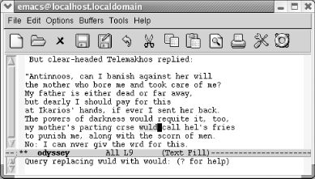</div></div><p class="copyright">
                           </p>
                        </td></tr><tr class="calibre12"><td class="calibre19">
                           <p class="copyright">Ispell starts a query-replace.</p>
                        </td></tr></tbody></table></div><p class="copyright">We want to replace all occurrences of the misspelled word, so
we'll type <span><strong class="calibre5">!</strong></span>,
which, as you might recall, means "replace them all
without asking."</p><div class="book"><a id="ch03-21-fm2xml" class="calibre2"></a><table class="calibre8"><colgroup class="calibre9"><col class="calibre10"/></colgroup><tbody class="calibre15"><tr class="calibre12"><td class="calibre17">
                           <p class="copyright">Type <span><strong class="calibre5">!</strong></span> then <span><strong class="calibre5">y</strong></span>
when prompted about saving your personal dictionary.</p>
                        </td></tr><tr class="calibre12"><td class="calibre17">
                           <p class="copyright">
                              </p><div class="book"><div class="mediaobject"><a id="I_3_tt99" class="calibre2"></a>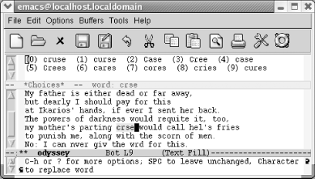</div></div><p class="copyright">
                           </p>
                        </td></tr><tr class="calibre12"><td class="calibre19">
                           <p class="copyright">Emacs moves to the "next"
misspelling, <span><em class="calibre7">crse</em></span>.</p>
                        </td></tr></tbody></table></div><p class="copyright">Ispell replaces the words,
<a id="gnu3-CHP-3-ITERM-1936" class="calibre2"></a>then goes on to the next misspelling,
<span><em class="calibre7">crse</em></span>. Note that this misspelling occurs before
the second incorrect <span><em class="calibre7">wuld</em></span>. Because we already
query-replaced <span><em class="calibre7">wuld</em></span> with
<span><em class="calibre7">would</em></span>, Ispell had to move backward to find the
next misspelling.</p><p class="copyright">Remember that Ispell, like all spellcheckers, corrects only true
misspellings. If a misspelling forms another word, Ispell will leave
it alone. It's up to you to change
<span><em class="calibre7">fries</em></span> to <span><em class="calibre7">fires</em></span> in this
passage.</p><p class="copyright">Different forms of the same word must be corrected separately. For
example, if you misspell <span><em class="calibre7">receive</em></span>,
<span><em class="calibre7">receives</em></span>, and <span><em class="calibre7">receiving</em></span> by
reversing the <span><em class="calibre7">i</em></span> and the <span><em class="calibre7">e</em></span>,
you must change each misspelled word.</p></div><div class="book" xml:lang="en"><div class="book"><div class="book"><div class="book"><h2 class="title1"><a id="gnu3-CHP-3-SECT-3.2" class="calibre1"></a>Checking a Single Word</h2></div></div></div><p class="copyright">Sometimes when you
<a id="gnu3-CHP-3-ITERM-1937" class="calibre2"></a>
               <a id="gnu3-CHP-3-ITERM-1938" class="calibre2"></a>are typing, you'll say,
"That doesn't look
right." To check the word the cursor is on, type
<span><strong class="calibre5">M-$</strong></span> (for <span><strong class="calibre5">ispell-word</strong></span>). Ispell checks the spelling of
the word and displays <em class="calibre7"><code class="calibre21">word</code></em>
               <code class="calibre21">:
ok</code> if the word is spelled correctly. If the word is
incorrect, Ispell displays a window with the options discussed
earlier.</p></div><div class="book" xml:lang="en"><div class="book"><div class="book"><div class="book"><h2 class="title1"><a id="gnu3-CHP-3-SECT-3.3" class="calibre1"></a>Completing a Word</h2></div></div></div><p class="copyright">You might start typing a
<a id="gnu3-CHP-3-ITERM-1939" class="calibre2"></a>
               <a id="gnu3-CHP-3-ITERM-1940" class="calibre2"></a>
               <a id="gnu3-CHP-3-ITERM-1941" class="calibre2"></a>word and then wonder,
"How is that spelled?" This is
where <span><strong class="calibre5">ispell-complete-word</strong></span> comes in.
You're typing a word and you get stuck. Type
<span><strong class="calibre5">M-Tab</strong></span> (for <span><strong class="calibre5">ispell-complete-word</strong></span>) and you get a list of
choices. After typing <span><em class="calibre7">occur</em></span>, you use this
command to find out the answer.</p><div class="book"><a id="ch03-22-fm2xml" class="calibre2"></a><table class="calibre8"><colgroup class="calibre9"><col class="calibre10"/></colgroup><tbody class="calibre15"><tr class="calibre12"><td class="calibre17">
                           <p class="copyright">Type: <span><strong class="calibre5">occur M-Tab</strong></span>
                           </p>
                        </td></tr><tr class="calibre12"><td class="calibre17">
                           <p class="copyright">
                              </p><div class="book"><div class="mediaobject"><a id="I_3_tt100" class="calibre2"></a>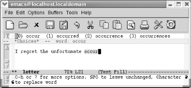</div></div><p class="copyright">
                           </p>
                        </td></tr><tr class="calibre12"><td class="calibre19">
                           <p class="copyright">Ispell choices appear at the top of the screen.</p>
                        </td></tr></tbody></table></div><div class="book"><a id="ch03-23-fm2xml" class="calibre2"></a><table class="calibre8"><colgroup class="calibre9"><col class="calibre10"/></colgroup><tbody class="calibre15"><tr class="calibre12"><td class="calibre17">
                           <p class="copyright">To select <span><em class="calibre7">occurrence</em></span>, type: <span><strong class="calibre5">2</strong></span>
                           </p>
                        </td></tr><tr class="calibre12"><td class="calibre17">
                           <p class="copyright">
                              </p><div class="book"><div class="mediaobject"><a id="I_3_tt101" class="calibre2"></a>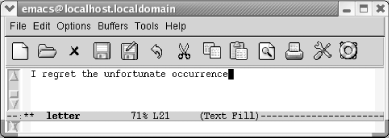</div></div><p class="copyright">
                           </p>
                        </td></tr><tr class="calibre12"><td class="calibre19">
                           <p class="copyright">Ispell completes the word for you.</p>
                        </td></tr></tbody></table></div><p class="copyright">This feature varies in its helpfulness. In this case the replacement
needed was shown. It won't always work that way, but
you can always simply spell it wrong and then use <span><strong class="calibre5">ispell-buffer</strong></span> to fix it.</p></div><div class="book" xml:lang="en"><div class="book"><div class="book"><div class="book"><h2 class="title1"><a id="gnu3-CHP-3-SECT-3.4" class="calibre1"></a>Spellchecking on the Fly with Flyspell</h2></div></div></div><p class="copyright">Flyspell highlights misspelled
<a id="gnu3-CHP-3-ITERM-1942" class="calibre2"></a>
               <a id="gnu3-CHP-3-ITERM-1943" class="calibre2"></a>
               <a id="gnu3-CHP-3-ITERM-1944" class="calibre2"></a>words as you type. You can also use
it to check existing text. The commands for doing this are different.</p><p class="copyright">To check text as you type, enter Flyspell mode by typing <span><strong class="calibre5">M-x flyspell-mode Enter</strong></span>.
<code class="calibre21">Fly</code> appears on the mode line. If you set up Emacs
to enter Flyspell mode automatically, your text is always
spell-checked "on the fly." An
alternative to Flyspell mode is Flyspell prog mode. In this mode,
designed for programmers, Emacs highlights misspellings only in
comments or strings. To enter it, type <span><strong class="calibre5">M-x
flyspell-prog-mode Enter</strong></span>.</p><p class="copyright">To check existing text, you run <span><strong class="calibre5">M-x
flyspell-buffer Enter</strong></span>. This command is like <span><strong class="calibre5">ispell-buffer</strong></span>; it spell-checks the entire
buffer. Flyspell's interface is different; it
underlines all the words it suspects are misspelled and gives you a
pop-up menu of alternatives.</p><p class="copyright">The best way to check out Flyspell mode is to turn it on and type
some misspelled text to see it in action. No matter whether you enter
Flyspell mode or run <span><strong class="calibre5">flyspell-buffer</strong></span>, you correct errors in the
same way. We'll demonstrate <span><strong class="calibre5">flyspell-buffer</strong></span> on our misspelled
<span><em class="calibre7">odyssey</em></span> file. Because it's an
existing file (not a new file we're typing), we need
to issue the <span><strong class="calibre5">flyspell-buffer</strong></span>
command.</p><div class="book"><a id="ch03-24-fm2xml" class="calibre2"></a><table class="calibre8"><colgroup class="calibre9"><col class="calibre10"/></colgroup><tbody class="calibre15"><tr class="calibre12"><td class="calibre17">
                           <p class="copyright">Type: <span><strong class="calibre5">Esc x flyspell-buffer Enter</strong></span>
                           </p>
                        </td></tr><tr class="calibre12"><td class="calibre17">
                           <p class="copyright">
                              </p><div class="book"><div class="mediaobject"><a id="I_3_tt102" class="calibre2"></a>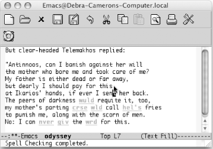</div></div><p class="copyright">
                           </p>
                        </td></tr><tr class="calibre12"><td class="calibre19">
                           <p class="copyright">Flyspell highlights misspelled words (Mac OS X).</p>
                        </td></tr></tbody></table></div><p class="copyright">Flyspell highlights
<a id="gnu3-CHP-3-ITERM-1945" class="calibre2"></a>
               <a id="gnu3-CHP-3-ITERM-1946" class="calibre2"></a>misspelled
words in red. Words that are repeatedly misspelled are highlighted in
yellow. Note that it doesn't highlight the proper
names we inserted in the dictionary earlier using Ispell; Flyspell
checks to see whether words are in your personal dictionary before
highlighting them as errors.</p><p class="copyright">You move to a misspelled word and press the middle mouse button to
display a pop-up menu of possible replacements. (This implies that
you have a three-button mouse, and, to be honest, you need one to
make Flyspell work properly.) You select a replacement using the
mouse.</p><div class="book"><a id="ch03-25-fm2xml" class="calibre2"></a><table class="calibre8"><colgroup class="calibre9"><col class="calibre10"/></colgroup><tbody class="calibre15"><tr class="calibre12"><td class="calibre17">
                           <p class="copyright">Move the cursor to <span><em class="calibre7">crse</em></span> and press the middle
mouse button.</p>
                        </td></tr><tr class="calibre12"><td class="calibre17">
                           <p class="copyright">
                              </p><div class="book"><div class="mediaobject"><a id="I_3_tt103" class="calibre2"></a>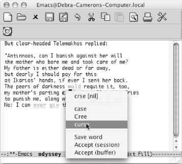</div></div><p class="copyright">
                           </p>
                        </td></tr><tr class="calibre12"><td class="calibre19">
                           <p class="copyright">Flyspell displays a pop-up window of alternatives; you choose one
with the mouse (Mac OS X).</p>
                        </td></tr></tbody></table></div><div class="book"><a id="ch03-26-fm2xml" class="calibre2"></a><table class="calibre8"><colgroup class="calibre9"><col class="calibre10"/></colgroup><tbody class="calibre15"><tr class="calibre12"><td class="calibre17">
                           <p class="copyright">Choose <span><em class="calibre7">curse</em></span> with the mouse.</p>
                        </td></tr><tr class="calibre12"><td class="calibre17">
                           <p class="copyright">
                              </p><div class="book"><div class="mediaobject"><a id="I_3_tt104" class="calibre2"></a>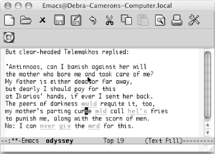</div></div><p class="copyright">
                           </p>
                        </td></tr><tr class="calibre12"><td class="calibre19">
                           <p class="copyright">Emacs inserts the correct replacement (Mac OS X).</p>
                        </td></tr></tbody></table></div><p class="copyright">Ispell inserts new words in the dictionary. Flyspell takes it a step
further, creating word abbreviations for
<a id="gnu3-CHP-3-ITERM-1947" class="calibre2"></a>
               <a id="gnu3-CHP-3-ITERM-1948" class="calibre2"></a>
               <a id="gnu3-CHP-3-ITERM-1949" class="calibre2"></a>words
that you misspell. In essence, a word abbreviation tells Emacs, in
this case, that <span><em class="calibre7">wrd</em></span> is just an abbreviation for
<span><em class="calibre7">word</em></span>, and that therefore Emacs should replace it
automatically. If you turn on word abbreviation mode, described in
the next section, chronic misspellings that Flyspell encounters will
be automatically corrected.</p><p class="copyright">How can you tell Flyspell is using word abbreviations? When you exit
a session in which you've used Flyspell, you see a
prompt that says, <code class="calibre21">Save</code> 
               <code class="calibre21">abbrevs</code>
               <code class="calibre21">in</code> 
               <code class="calibre21">~/.abbrev_defs (y</code>
               <code class="calibre21">or</code> 
               <code class="calibre21">n)</code>. This automatic
correction won't occur without turning on word
abbreviation mode, whether in your startup or manually. Read the
section on this topic in this chapter for more details.</p><p class="copyright">What do you do if you encounter a word that's
spelled correctly but that Flyspell doesn't
recognize? You could insert it in your Ispell dictionary if
it's a word you use frequently. The Save word option
on the Flyspell pop-up menu handles this. For a temporary fix, the
options Accept buffer and Accept session tell Flyspell to accept a
word for the current buffer or for all buffers in the current Emacs
session automatically. Of course, if it's a word you
use frequently, you may want to insert it in the Ispell dictionary to
keep Flyspell from flagging it each time.</p><p class="copyright">To enter flyspell mode automatically, add this line to your
<span><em class="calibre7">.emacs</em></span> file:</p><a id="I_3_tt105" class="calibre2"></a><pre class="programlisting">(setq-default flyspell-mode t)</pre><p class="copyright">
               <a class="calibre2" href="ch03s03.html#gnu3-CHP-3-TABLE-6" title="Table 3-6. Spell-checking commands">Table 3-6</a> summarizes the Ispell and Flyspell
commands.</p><div class="book"><a id="gnu3-CHP-3-TABLE-6" class="calibre2"></a><p class="title2"><b class="calibre25">Table 3-6. Spell-checking commands</b></p><div class="table-contents"><a id="gnu3-CHP-3-ITERM-1950" class="calibre2"></a><a id="gnu3-CHP-3-ITERM-1951" class="calibre2"></a><a id="gnu3-CHP-3-ITERM-1952" class="calibre2"></a><a id="gnu3-CHP-3-ITERM-1953" class="calibre2"></a><table summary="Spell-checking commands" class="calibre8"><colgroup class="calibre9"><col class="calibre10"/><col class="calibre10"/><col class="calibre10"/></colgroup><thead class="calibre11"><tr class="calibre12"><th class="calibre26">
                           <p class="copyright">
                              <span><strong class="calibre5">Keystrokes</strong></span>
                           </p>
                        </th><th class="calibre26">
                           <p class="copyright">
                              <span><strong class="calibre5">Command name</strong></span>
                           </p>
                        </th><th class="calibre27">
                           <p class="copyright">
                              <span><strong class="calibre5">Action</strong></span>
                           </p>
                        </th></tr></thead><tbody class="calibre15"><tr class="calibre12"><td class="calibre28">
                           <p class="copyright">
                              <span><strong class="calibre5">M-$</strong></span>
                              <span><em class="calibre7">Tools</em></span>
                              <span>→</span> 
                              <span><em class="calibre7">Spell Checking</em></span> 
                              <span>→</span>
                              <span><em class="calibre7">Spell-Check Word</em></span>
                           </p>
                        </td><td class="calibre28">
                           <p class="copyright">
                              <span><strong class="calibre5">ispell-word</strong></span>
                           </p>
                        </td><td class="calibre29">
                           <p class="copyright">Check the word the cursor is on or the word following the cursor.</p>
                        </td></tr><tr class="calibre12"><td class="calibre28">
                           <p class="copyright">(<span><em class="calibre7">none</em></span>)<span><em class="calibre7">Tools</em></span> 
                              <span>→</span>
                              <span><em class="calibre7">Spell Checking</em></span> 
                              <span>→</span> 
                              <span><em class="calibre7">Spell-Check
Region</em></span>
                           </p>
                        </td><td class="calibre28">
                           <p class="copyright">
                              <span><strong class="calibre5">ispell-region</strong></span>
                           </p>
                        </td><td class="calibre29">
                           <p class="copyright">Check spelling of the region.</p>
                        </td></tr><tr class="calibre12"><td class="calibre28">
                           <p class="copyright">(<span><em class="calibre7">none</em></span>)<span><em class="calibre7">Tools</em></span> 
                              <span>→</span>
                              <span><em class="calibre7">Spell Checking</em></span> 
                              <span>→</span> 
                              <span><em class="calibre7">Spell-Check
Buffer</em></span>
                           </p>
                        </td><td class="calibre28">
                           <p class="copyright">
                              <span><strong class="calibre5">ispell-buffer</strong></span>
                           </p>
                        </td><td class="calibre29">
                           <p class="copyright">Check spelling of the buffer.</p>
                        </td></tr><tr class="calibre12"><td class="calibre28">
                           <p class="copyright">(<span><em class="calibre7">none</em></span>)<span><em class="calibre7">Tools</em></span> 
                              <span>→</span>
                              <span><em class="calibre7">Spell Checking</em></span> 
                              <span>→</span> 
                              <span><em class="calibre7">Spell-Check
Message</em></span>
                           </p>
                        </td><td class="calibre28">
                           <p class="copyright">
                              <span><strong class="calibre5">ispell-message</strong></span>
                           </p>
                        </td><td class="calibre29">
                           <p class="copyright">Check spelling of the body of a mail message.</p>
                        </td></tr><tr class="calibre12"><td class="calibre28">
                           <p class="copyright">(<span><em class="calibre7">none</em></span>)<span><em class="calibre7">Tools</em></span> 
                              <span>→</span>
                              <span><em class="calibre7">Spell Checking</em></span> 
                              <span>→</span> 
                              <span><em class="calibre7">Spell-Check
Comments</em></span>
                           </p>
                        </td><td class="calibre28">
                           <p class="copyright">
                              <span><strong class="calibre5">ispell-comments-and-strings</strong></span>
                           </p>
                        </td><td class="calibre29">
                           <p class="copyright">Check spelling of comments and strings in a program.</p>
                        </td></tr><tr class="calibre12"><td class="calibre28">
                           <p class="copyright">
                              <span><strong class="calibre5">C-u M-$</strong></span>
                              <span><em class="calibre7">Tools</em></span>
                              <span>→</span> 
                              <span><em class="calibre7">Spell Checking</em></span> 
                              <span>→</span>
                              <span><em class="calibre7">Continue Spell-Checking</em></span>
                           </p>
                        </td><td class="calibre28">
                           <p class="copyright">
                              <span><strong class="calibre5">ispell-continue</strong></span>
                           </p>
                        </td><td class="calibre29">
                           <p class="copyright">Resume Ispell; it works only if stopped Ispell with <span><strong class="calibre5">C-g</strong></span>.</p>
                        </td></tr><tr class="calibre12"><td class="calibre28">
                           <p class="copyright">(<span><em class="calibre7">none</em></span>)</p>
                        </td><td class="calibre28">
                           <p class="copyright">
                              <span><strong class="calibre5">ispell-kill-ispell</strong></span>
                           </p>
                        </td><td class="calibre29">
                           <p class="copyright">Kill the Ispell process, which continues to run in the background
after it is invoked.</p>
                        </td></tr><tr class="calibre12"><td class="calibre28">
                           <p class="copyright">
                              <span><strong class="calibre5">M-Tab</strong></span>
                              <span><em class="calibre7">Tools</em></span>
                              <span>→</span> 
                              <span><em class="calibre7">Spell Checking</em></span> 
                              <span>→</span>
                              <span><em class="calibre7">Complete Word</em></span>
                           </p>
                        </td><td class="calibre28">
                           <p class="copyright">
                              <span><strong class="calibre5">ispell-complete-word</strong></span>
                           </p>
                        </td><td class="calibre29">
                           <p class="copyright">In text mode, list possible completions for the current word.</p>
                        </td></tr><tr class="calibre12"><td class="calibre28">
                           <p class="copyright">(<span><em class="calibre7">none</em></span>)<span><em class="calibre7">Tools</em></span> 
                              <span>→</span>
                              <span><em class="calibre7">Spell Checking</em></span> 
                              <span>→</span> 
                              <span><em class="calibre7">Automatic Spell-Checking (Flyspell)</em></span>
                           </p>
                        </td><td class="calibre28">
                           <p class="copyright">
                              <span><strong class="calibre5">flyspell-mode</strong></span>
                           </p>
                        </td><td class="calibre29">
                           <p class="copyright">Enter the Flyspell minor mode, in which incorrectly spelled words are
highlighted.</p>
                        </td></tr><tr class="calibre12"><td class="calibre30">
                           <p class="copyright">(<span><em class="calibre7">none</em></span>)</p>
                        </td><td class="calibre30">
                           <p class="copyright">
                              <span><strong class="calibre5">flyspell-buffer</strong></span>
                           </p>
                        </td><td class="calibre31">
                           <p class="copyright">Spell-check the current buffer, underlining all misspelled words. Use
middle mouse button to correct.</p>
                        </td></tr></tbody></table></div></div><br class="book"/></div><div class="book"><br class="book"/><hr class="calibre4"/><div class="book"><p class="copyright"><sup class="calibre6">[<a id="ftn.gnu3-CHP-3-FNOTE-1" href="#gnu3-CHP-3-FNOTE-1" class="calibre2">1</a>] </sup>Your default dictionary might be
called something else entirely, like
<span><em class="calibre7">.aspell.language.pws</em></span>. If you run the command
<span><strong class="calibre5">ispell-check-version</strong></span>,
you'll see that although Ispell is supposedly
running, it's really Aspell behind the scenes.</p></div></div></div></div>

{% endraw %}

